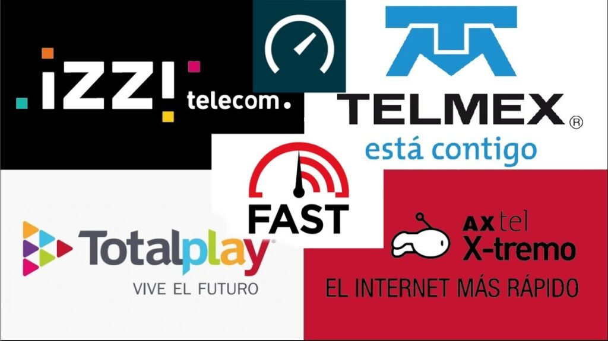
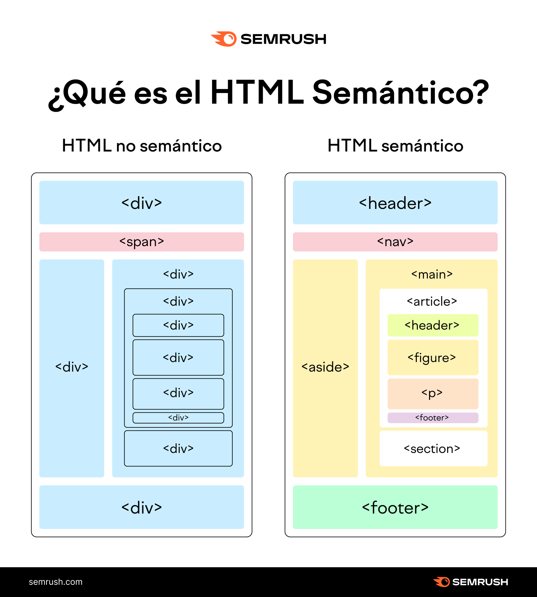

Enlaces Internos y Tablas
Internet es una red de computadoras interconectadas a nivel mundial en forma de tela de araña. Consiste de servidores o nodos que proveen información a aproximadamente 100 millones de personas que están conectadas entre ellas a través de las redes de telefonía y cable.

Son empresas que proporcionan acceso a Internet, normalmente a través de una conexión de acceso telefónico, de DSL o de banda ancha. Los ISP también pueden ofrecer servicios relacionados, como cuentas de correo electrónico, hospedaje web, registro de nombres de dominio e incluso comunicaciones de datos y servicios telefónicos.
| Tipo de Proveedor de Internet | Proveedor de servicio de internet |
| DSL | AT&T |
| Cable | Comcast Xfinity |
| Fibra Óptica | Google Fiber |
| Satélite | Starlink |
| Inalámbrico Fijo | Verizon Home LTE |
| Móvil | T-Mobile |
son aquellos que proporcionan intercambio de la información del usuario. Estos protocolos especifican la información de control y formato necesaria para muchas de las funciones de comunicación de Internet más comunes.
Algunos ejemplos son:
- El protocolo Servicio de nombres de dominio (DNS/Domain Name Service) se utiliza para resolver nombres de Internet en direcciones IP.
- El protocolo de transferencia de hipertexto (HTTP/Hypertext Transfer Protocol) se utiliza para transferir archivos que forman las páginas Web de la World Wide Web.
- El Protocolo simple de transferencia de correo (SMTP) se utiliza para la transferencia de mensajes de correo y adjuntos
- Telnet, un protocolo de emulación de terminal, se utiliza para proporcionar acceso remoto a servidores y a dispositivos de red.
- El Protocolo de transferencia de archivos (FTP/File Transfer Protocol) se utiliza para la tansferencia interactiva de archivos entre sistemas.

Carpeta Local
Una carpeta local se refiere a un directorio de archivos que reside en el disco duro de la computadora que estás usando actualmente. Es la forma más común y directa de almacenar y organizar archivos.
Carpeta Remota
Una carpeta remota es un directorio de archivos que reside en otro sistema o servidor que se accede a través de una red, que puede ser una red local (LAN) o Internet. Es común en configuraciones de red corporativas y en servicios de almacenamiento en la nube.

El término UX viene de User Experience, o Experiencia del Usuario. Básicamente es cómo una persona se siente mientras usa cualquier producto o servicio digital que tu empresa ofrece.
UX tiene que ver también con la sensación de esta persona después de usar tu producto.
La expresión UI viene de User Interface, que significa Interfaz del Usuario. La idea del UI es guiar al usuario por tu aplicación durante el tiempo que él la usa.
Un buen trabajo de diseño UI te permitirá guiar a los usuarios por la navegación y los llevará a tomar dichas acciones de manera natural
| Proveedores de pago | Proveedores Gratuitos |
| Hostinger | 000Webhost |
| Ionos | Github |
| SiteGround | Google Firebase |
| Bluehost | Netlify |
| HostGator | Heroku |
| Webempresa | Vercel |
| Arsys | InfinityFree |
| Nominalia | AwardSpace |
| Raiola Networks | x10Hosting |
| GoDaddy | SW Hosting |
Al contratar un proveedor de hosting para tu proyecto web, hay varios elementos clave que debes tener en cuenta para asegurar que el servicio se ajuste a tus necesidades y expectativas.
Algunos elementos clave a tomar en cuenta son:
El tipo de hosting es un factor crucial. El hosting compartido es económico, pero el rendimiento puede verse afectado al compartir recursos con otras webs.
El rendimiento y la velocidad del servidor son fundamentales para asegurar una buena experiencia de usuario.
La confiabilidad del servicio y el uptime son esenciales para mantener tu sitio web siempre disponible.
La seguridad es vital para proteger tu sitio web y la información de tus usuarios. Asegúrate de que el proveedor ofrezca certificados SSL para encriptar los datos, protección contra ataques DDoS, y copias de seguridad periódicas que sean fáciles de restaurar en caso de cualquier problema.
La capacidad de escalar es importante para permitir el crecimiento de tu sitio web sin necesidad de migrar a otro proveedor. Debe ser fácil actualizar a un plan con mayores recursos a medida que tu tráfico y necesidades aumenten.
La facilidad de uso puede ahorrarte tiempo y esfuerzo en la gestión de tu hosting.
Es un concepto que se utiliza para estructurar y escribir código HTML, utilizando etiquetas semánticas las cuales nos sirven para que el contenido de la página web sea más claro, estas etiquetas ayudan a la legibilidad y usabilidad
Existen varias ventajas en diferentes ámbitos, en el caso del diseño, permite hacer hojas de estilo CSS separadas para cada sección del sitio web. Ayuda a que los motores de búsqueda analicen el código de una manera más óptima, también ayuda a la accesibilidad, practicidad y reusabilidad del código.
